November 27 - 29, 2008
| We had a great time in Westville over
Thanksgiving. We were able to bring our friend Steve Fekete with
us. Steve & Eric enjoyed a climbing trip in Arkansas right after
Thanksgiving while I stayed home to visit with my family. A great
time was had by all. |
|
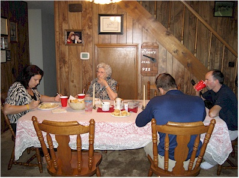 |
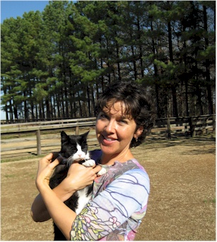 |
| Desirae, Gran, Steve, and Eric - tearing up some Thanksgiving dinner | Me & Momma Kitty enjoying the warm day |
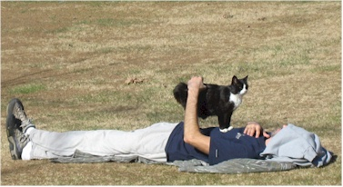 |
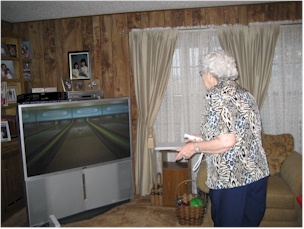 |
| Now she is 'helping' Eric with his nap in the front yard |
Next we made Gran play the Wii - I'm not so sure she liked it! |
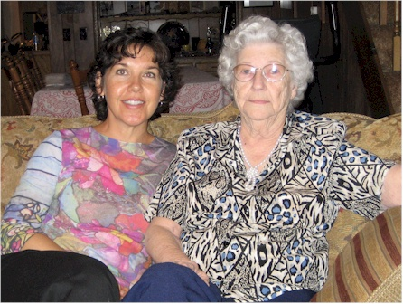 |
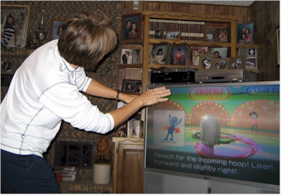 |
| Me & Gran | Mom, really getting into the hula hoop in the Wii |
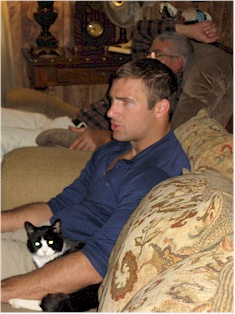 |
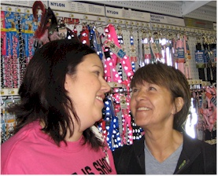 |
| Steve, trying to tell a story while being snuggled | Desirae & Mom at the after-Thanksgiving sales |
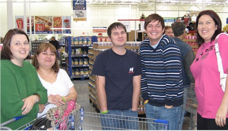 |
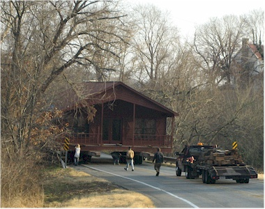 |
| A happy surprise - we ran into our friends Nancy, team James, and their friend at Sam's. |
An unhappy surprise - we got stuck behind a house being moved by amateurs. They wedged that thing on the bridge - it was stuck! |
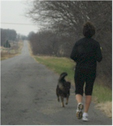 |
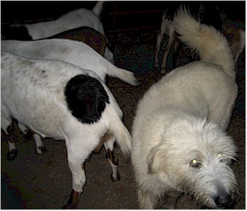 |
| I ran 5 miles with Mom, then she ran 5 more with her new friend, this goofy dog. Then she had to run an extra mile to coax him back home. | This is Desi & Keith's goat dog, Scruffy |
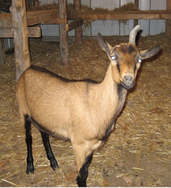 |
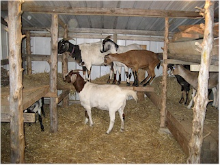 The goats enjoying the house Keith built for them. |
| A unicorn! | |
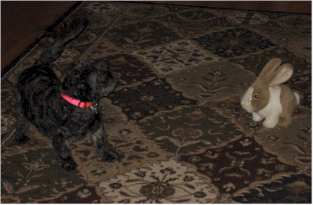 |
Prissy was kicking this rabbit's butt until we turned it on and it started moving around on its own. It's all fun & games until the rabbit |